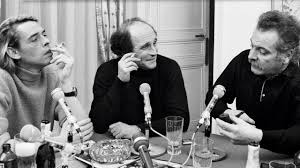

"
Mon premier site
Bienvenue sur ma page web !
Bonjour et bienvenue sur mon site !
Ceci est mon premier site, alors soyez indulgents !
Ce lien vous permet d'acceder à mon CV :Télécharger le fichier
Pour ce qui est de mon parcours, je vous invite à consulter mon CV via le lien ci-dessus.
Pourquoi vouloir suivre une formation à CEFIM ?
Il y a plusieurs raisons :
- L'envie de changer
- L'envie d'apprendre un nouveau métier dans un secteur d'avenir
- L'envie d'acquérir de nouvelles compétences qui m'ouvriront de nouvelles perspectives professionnelles
- Un choix qui est cohérent avec mes goûts et mes aspirations
- Un organisme de formation réputé
Mes activités et centres d'intérêt
- Culturelles : lecture, musique , cinéma, concerts, visites de musées et chateaux, histoire, généalogie ...
- Sport (un peu) : vélo et randonnée
- M'occuper des enfants (ça prend du temps !)
- M'occuper du jardin et de la maison (ça aussi ça prend du temps !)
Mes sites préférés
Tokonoma magazine
Librairie Thuard
Librairie Bulle
Culture Prime
Et voici une jolie photo pour illustrer mes goûts!
